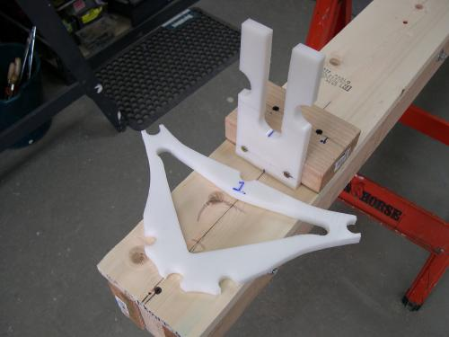
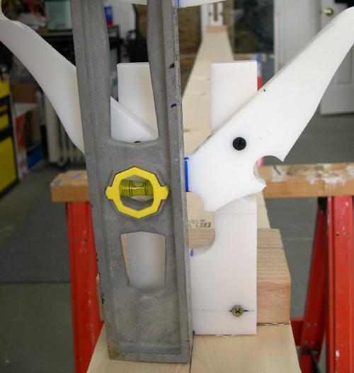

| Attaching Cross Sections 1 and 8 | Menu Last Page Next Page |
|

1. Cross sections 1 and 8 are attached to HDPE stations during frame assembly. All other cross sections are free standing. The aluminum stringers are snapped on these two stations and cross sections 2 thru 7 are snapped into place along the stringers. All of the aluminum tubes have equal flex and will self-level between the two stations. |

2. Line up the cross sections vertically using a level placed on the centerline of the strongback. Use only one of the two deck screws at this point. |